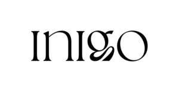

Trade Mark Journal No.2025/037 12 September 2025
UK00004255713 28 August 2025 (21,32,33,43)
Mark 1
INIGO
Mark 2

- Class 21
- Cocktail shakers; Cocktail stirrers; Cocktail strainers; Cocktail glasses; Cocktail muddlers; Cocktail jiggers [measuring devices]; Bar spoons; Ice buckets; Ice tongs; Ice cube moulds; Bottle openers; Pourers for bottles; Wine aerators; Decanters; Reusable drinking straws; Household or kitchen utensils and containers for preparing, mixing and serving cocktails; Barware, other than of precious metal.
- Class 32
- Alcohol free beverages; Frozen cocktails, non-alcoholic; Carbonated non-alcoholic drinks; Cocktails, non- alcoholic; Fruit beverages (non-alcoholic); Low calorie non-alcoholic drinks; Non-alcoholic beverages; Non-alcoholic cocktails; Pre-mixed non-alcoholic cocktails based on tea, spices and botanicals; Non- alcoholic mixers used to make alcoholic beverages; Syrups and other non-alcoholic preparations for making beverages; Non-alcoholic beverages, namely, mocktails; Non-alcoholic beverages flavoured with Gochujang; Non-alcoholic fruit cocktails; Non-alcoholic pre-mixed cocktails; Pre-mixed non-alcoholic cocktails containing natural herbs, vegetable and fruit extracts; Pre-mixed non-alcoholic cocktails containing naturally occurring sugars; Pre-mixed non-alcoholic beverages based on non-alcoholic spirits and spices, herbs, fruits, vegetables and sweet and savoury sauces; Carbonated non-alcoholic drinks; Non-alcoholic cocktail mixes used as bases for drinks; Non-alcoholic cocktails based on spices, tea, floral notes; Coffee-based non-alcoholic ready mixed cocktails .
- Class 33
- Alcoholic beverages, except beers; Spirits; Liqueurs; Fortified wines; Wines; Sparkling wines; Pre-mixed alcoholic beverages other than beer-based; Alcoholic cocktails; Aperitifs; Digestifs [liqueurs and spirits]; Alcoholic bitters; Alcoholic fruit beverages; Flavoured spirits; Ready-to-drink alcoholic beverages; Alcoholic essences and extracts for making cocktails.
- Class 43
- Bar services; Cocktail lounge services; Wine bar services; Nightclub services in the nature of providing food and drink; Catering for the provision of food and drink; Preparation and serving of cocktails and mixed drinks; Hospitality services in the nature of providing food and drink; Temporary accommodation services combined with bar and lounge services.
ENDGAME DRINKS LTD
Representative: Trademark Brothers Ltd.